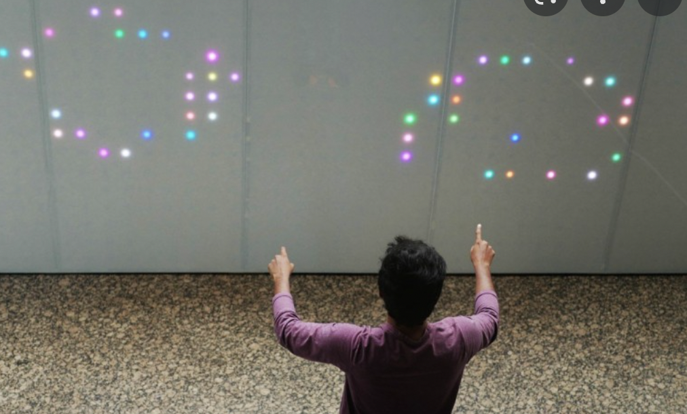

As students study, a lot of time we become trapped in our worrying and wandering mind instead of focusing on the present physical moment. We also feel isolated and bored as time passes by. To help promote students’ mental wellbeing and social behaviours, I envision a play space where there is an interactive screen that features different levels and types of buzzer wire game that requires players to start their path from on both left and right side of the screen, to eventually meet each other in the middle end point. A timer locates on the upper side of the screen. The goal is to bring users back into the present moment and eliminate stress by cooperate socially with each other on a single, fun task.
As for interactions, It takes two players to get their hand movement registered and detected by the motion sensors. Players will try their best to pass through the wires as quickly as possible without without being distracted by obstacles that appears on screen randomly such as meme characters or food images. Only when both players completed the game together they can unlock the next level.
The envisioned input technology will be poseNet / YOLO, or motion detectors, and output technology will be the interactive screen.
Research on Jammify

Artist/maker: Sachith Muthukumarana/ Don Samitha Elvitigala/ Qin Wu /Yun Suen Pai Suranga Nanayakkara
Jammify is an installation motivated by providing a playful led art light jamming to busy individuals to enhance the element of spontanity in one's day to day worklife. Jammify enables participants to play throught active engagement in relaxed drawing motions, allowing them to refresh their minds from mentally stress and mundanity of work. Also, it enables participants with new technology-induced experience as a way to inspire their curiosity in the field of technology. Currently, Jammify consists of a double-sided wall-sized LED light display and a forearm augmentation that can be used to track user's movement input.
Visit Jammify's Official Site
Purpose: As social distancing is becoming the new normal, technology holds the potential to bridge this societal gap through novel interaction modalities that allow multiple users to collaborate and create content together.
Technical Operation :
Two individuals could draw on each side of the LED display as well as share emotive touch via a wearable forearm augmentation that enables the recreation of subtle touch sensations on each other's hands, creating a collective playful interaction.
Using I/O Brush, a user can paint with the captured colours and patterns that animates over time. FingerDraw uses a finger-worn device that has a camera and a button to allow users to capture colours and textures from real world objects and use them for digital drawing.
Mimeo Pad uses a camera-equipped tablet stylus to allow users to transfer the shape of an image on a physical paper to a digital canvas by rubbing the stylus on the paper like making a frottage art.
The types of playful interactions involved are
Unstructured,
Single player & multiplayer,
Cooperative and involve independent actions
Reflection on Playful Interactions
With the unlimited potential that sensors and computer vision offers, I think it's a versatile topic that exceeds my expectations in the sense that it that can be used to enrich the way we play and learn, and be entertained in both private and public areas.
As a student currently studying abroad, in future, I can see playful interactions being applied to further strengthen various forms of long distance relationships by translating and enriching real time presence of one individual to the other. For example, can we make a person feel the real time touch or warmth of the loved ones as they hug and kiss each other? Can we translate moods into certain sensation so that the other person know what we are feeling in real time?